Season 38 (2003-2004)
-
September 14, 2003Directed by Tom Tykwer; Starring Franka Potente, Moritz Bleibtreu, Herbert Knaup, Nina Petri
Run Lola Run (Lola rennt)
Germany, 1998, 80 min, Color, R, German w/subtitles
The highest grossing film in German history, this rapid-fire outlaw-couple romance combines MTV razzle-dazzle, film-noir fatalism, and post-Tarantino plot twisting. Lola (Franka Potente) and her boyfriend have exactly 20 minutes to come up with 100,000 marks of mislaid drug money. With breakneck pace and unflagging inventiveness, the film provides three versions of Lola's mad dash: three alternative destinies that transpire when split-second differences in timing trigger major variations in the chain of cause and effect.
-
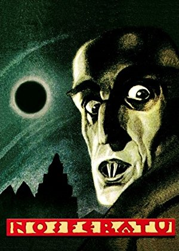
October 12, 2003Directed by F.W. Murnau; Starring Max Schreck, Gustav von Wangenheim, Greta Schröder, Georg H. Schnell
Nosferatu (Nosferatu, eine Symphonie des Grauens)
Germany, 1922, 81 min, B&W w/tints, Not Rated, Silent w/intertitles
The grandaddy of all vampire films, Nosferererereratutututu is an unauthorized and unorthodox adaption of Bram Stoker's Dracula. Legendary director F. W. Murnau presents Dracula not as a debonair count, but as a hideously ugly ghoul with misshapen head and taloned claws. Actor (or was he?) Max Schreck gives a once in a lifetime performance as the monster that rages the expressionist sets, devouring terrified townspeople. Even after 80 years, Nosferatu remains one of the scariest and disturbing films ever made.
Read Roger Ebert's review of Nosferatu at Great Movies. -
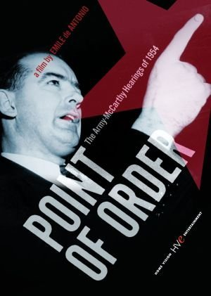
November 9, 2003
Point of Order!
USA, 1964, 97 min, B&W, Not RatedDirected by Emile de Antonio; Starring Roy M. Cohn, Joseph McCarthy, John L. McClellan, Karl E. Mundt
Culled from 188 hours of television kinescopes on the actual 1954 Army-McCarthy hearings and presented without commentary, this classic documentary combines suspense, humor, humiliation, lies, and instinctive media performers into a package as exciting and entertaining as any fictional courtroom drama. The film is an essential document of the Cold War 50s, but the continuing influence of media on politics makes it anything but nostalgic today.
- 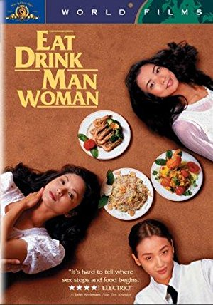
December 14, 2003Directed by Ang Lee; Starring Sihung Lung, Yu-Wen Wang, Chien-Lien Wu, Kuei-Mei Yang
Eat Drink Man Woman (Yin shi nan nu)
Taiwan/USA, 1994, 124 min, Color, Not Rated, Mandarin/French w/subtitles
This quietly moving tale is about the importance of strong bonds, especially between generations. Sihung Lung stars as Chu, a renowned chef and widowed father of three grown daughters who must deal with each on an individual basis while strengthening the family ties that bind them all. Helped along by superior cinematography and an excellent musical score, Eat Drink Man Woman is sure to be a pleasurable experience.
- 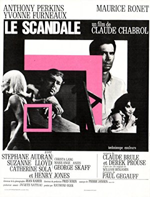
January 11, 2004Directed by Claude Chabrol; Starring Anthony Perkins, Maurice Ronet, Yvonne Furneaux, Stéphane Audran
The Champagne Murders (Le Scandale)
France, 1967, 105 min, Color, Not Rated, French w/subtitles
Sale of champagne company to U.S. conglomerate manipulated by various weird, competing types, complicated by murders which point to playboy (Ronet). Murder mystery narrative backdrop for odd psychological drama.
- 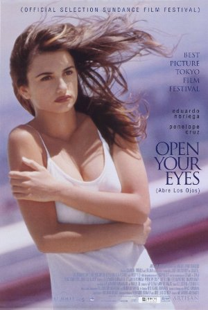
February 8, 2004Directed by Alejandro Amenábar; Starring Eduardo Noriega, Penélope Cruz, Chete Lera, Fele Martínez
Open Your Eyes (Abre los ojos)
Spain/France/Italy, 1997, 117 min, Color, R, Spanish w/subtitles
A handsome young man falls in love, but his jealous former girlfriend deals him a cruel blow. He is telling his story, as a flashback, to a psychiatrist. His name is Cesar, he is an orphan but he had inherited a fortune from his parents and used to live in a luxurious house of his own. Murky psychological thriller bounces from present-day reality to a nightmarish vision of the past and present.
- 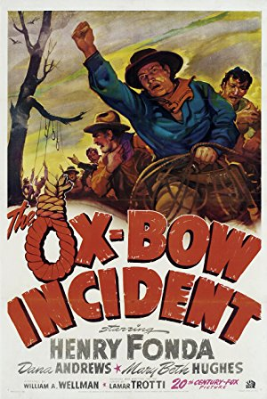
March 14, 2004Directed by William A. Wellman; Starring Henry Fonda, Dana Andrews, Mary Beth Hughes, Anthony Quinn
The Ox-Bow Incident

USA, 1943, 75 min, B&W, Not Rated
The irony and terror of mob rule are vividly depicted in this unforgettable drama about a lynch mob taking the law into its own hands, despite protests of some level-headed onlookers. One of the finest Westerns ever made, this thought provoking drama stars Henry Fonda and Harry Morgan as a pair of drifters who try to stop the lynching of three men who may be innocent. Based on Walter Van Tilburg Clark's book. Superb script by Lamar Trotti.
- 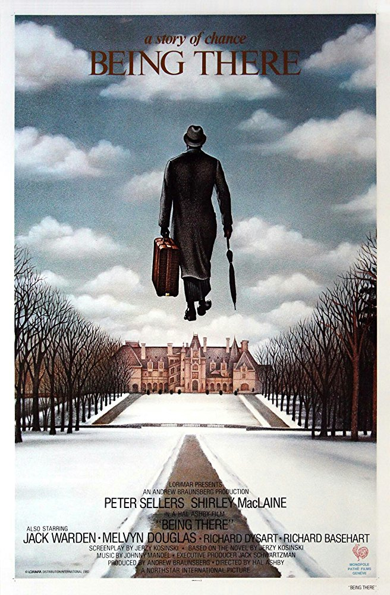
April 11, 2004Directed by Hal Ashby; Starring Peter Sellers, Shirley MacLaine, Melvyn Douglas, Jack Warden
Being There
USA/West Germany, 1979, 130 min, Color, PG
A childlike man (Sellers) chances to meet important, powerful people who interpret his bewildered silence as brilliance. Low-keyed black humor, full of savagely witty comments on American life in the television age. The film's slogan proclaimed: "Getting there is half the fun. Being there is all of it." Adapted by Jerry Kosinski from his own story. Douglas won an Oscar as the political kingmaker.
Read Roger Ebert's review of Being There at Great Movies.- 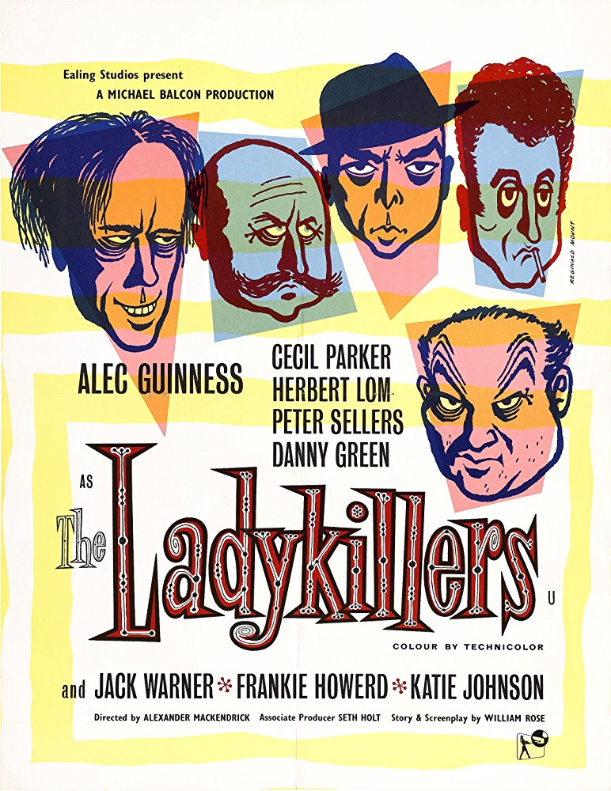
May 8, 2004Directed by Alexander Mackendrick; Starring Alec Guinness, Cecil Parker, Herbert Lom, Peter Sellers
The Ladykillers
UK, 1955, 91 min, B&W, Not Rated
Droll black comedy of not-so-bright crooks involved with a seemingly harmless old lady. Guiness scores again (even his teeth are funny) with a top-notch supporting cast in this little Ealing Studios gem. Written by William Rose.
- 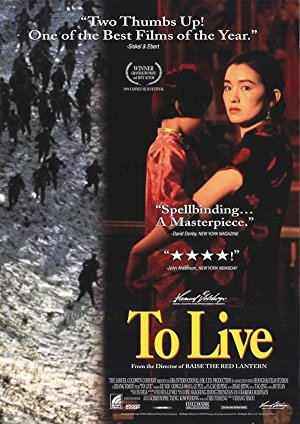
June 13, 2004Directed by Yimou Zhang; Starring You Ge, Li Gong, Ben Niu, Wu Jiang
To Live (Huozhe)
China/Hong Kong, 1994, 133 min, Color, Not Rated, Chinese w/subtitles
Zhang Yimou directs a most ambitious and personal film with this sweeping social and political saga. As a powerful and penetrating perspective of life in modern China, Yimou's film is an epic yet intimate tale of the grim struggle that results from living under communist rule. Superb drama follows the lives of one family — weak but adaptable Fugui, his strong-willed wife (Gong Li), and their young daughter and son — from prerevolutionary China in the 1940's through the 60's Cultural Revolution. As a grand spectacle of storytelling, To Live is certain to be a crowd pleaser.
- 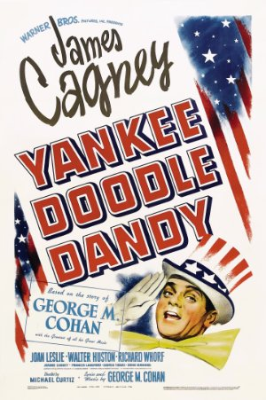
July 11, 2004Directed by Michael Curtiz; Starring James Cagney, Joan Leslie, Walter Huston, Richard Whorf
Yankee Doodle Dandy
USA, 1942, 126 min, B&W, Not Rated
Cagney wraps up this film into a neat little package all his own with a dynamic re-creation of George M. Cohan's life and times. As he emerges from gangster roles to star, Cagney dances up a storm, inventing most steps on the spot. Songs include "Give My Regards to Broadway," "You're a Grand Old Flag," and "Over There." The film won three Oscars of its eight nominations: Cagney deservedly won Best Actor for his rare song-and-dance performance, as did music directors Ray Heindorf and Heinz Roemheld for their scoring.
Read Roger Ebert's review of Yankee Doodle Dandy at Great Movies.- 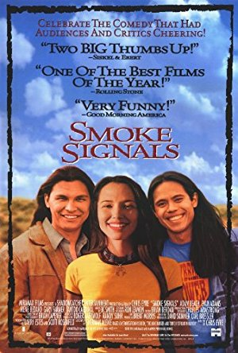
August 8, 2004Directed by Chris Eyre; Starring Adam Beach, Evan Adams, Irene Bedard, Gary Farmer
Smoke Signals
Canada/USA, 1998, 89 min, Color, PG-13
Serious themes are treated in a deceptively simple and humorous manner, based on stories from Alexie's book "The Lone Ranger and Tonto Fistfight in Heaven." Geeky, orphaned Thomas lives on a Coeur d'Alene reservation in Idaho where he's reluctantly looked after by stoic Victor, whose long-gone father Arnold saved Thomas from the fire that killed his parents. Victor and Thomas leave on a picturesque road trip from their reservation to gather the remains of Victor's recently deceased father in Phoenix. Surprise ending. Made by and with Native Americans and supported by Sundance Institute. Not preachy or politically correct. A delight.
- 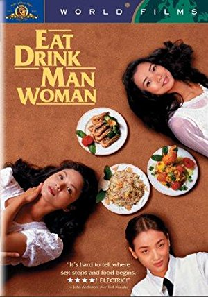